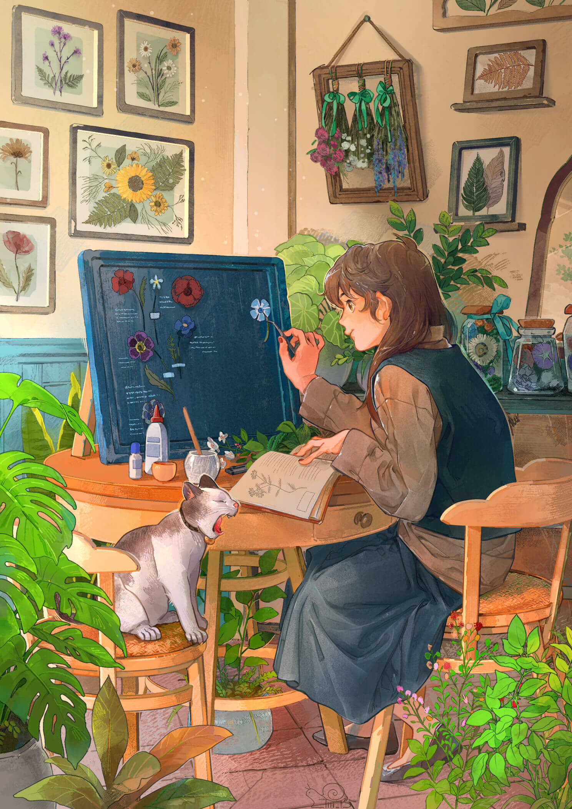

Saya adalah siswi kelas 11 IPA di SMA Santa Theresia yang saat ini
sedang menjalani Semester 1. Saya menyukai science sehingga saya mengambil kelas dengan paket full IPA dan rata-rata nilai
saya 90. Saya telah mengikuti olimpiade matematika dan astronomi.
Saya adalah siswi kelas 11 IPA di SMA Santa Theresia yang saat ini
sedang menjalani Semester 1. Saya menyukai science sehingga saya mengambil kelas dengan paket full IPA dan rata-rata nilai
saya 90. Saya telah mengikuti olimpiade matematika dan astronomi.
Saat ini saya sedang persiapan untuk penilaian akhir semester 1
dan saya juga sedang mempelajari bahasa Jerman untuk mempersiapkan diri
studi di Jerman. Selain itu, saya menyukai science dan game yang membutuhkan strategi,
Pengalaman
Berorganisasi
Pengurus Kelas X & XI
Pengurus Kelas X & XI
2024-2026
Saat saya menduduki kelas X, saya menjadi pengurus kebersihan kelas yang
bertanggung jawab untuk menjaga kebersihan dan kerapihan ruang kelas.
Lalu, saat saya naik ke kelas XI, saya menjadi sekeretaris kelas yang
bertugas mengisi jurnal kelas dan mencatat kegiatan yang dilakukan di kelas.

Panitia Lomba Menggambar
Panitia Lomba Menggambar
2025
Pada bulan Januari 2025, SMA Santa Theresia mengadakan acara Natal yang terdapat
beberapa lomba yang diadakan, salah satunya adalah lomba menggambar. Saya
terpilih menjadi salah satu panitia dalam lomba tersebut. Tugas saya adalah
membantu menyiapkan alat dan bahan untuk lomba menggambar serta membantu
jalannya lomba pada hari H.
Panitia Bunga Rampai
Panitia Bunga Rampai
2025
Pada kegiatan Intergrated Learning (IL) di SMA Santa Theresia tahun ajaran 2025-2026 saya menjadi
salah satu panitia dalam membuat buku bunga rampai kelas XI.1. Tugas Saya adalah mengumpulkan
laporan karya dari teman-teman sekelas, menyusun isi buku, menyamakan format, serta membantu
proses desain dan layout buku bunga rampai tersebut.